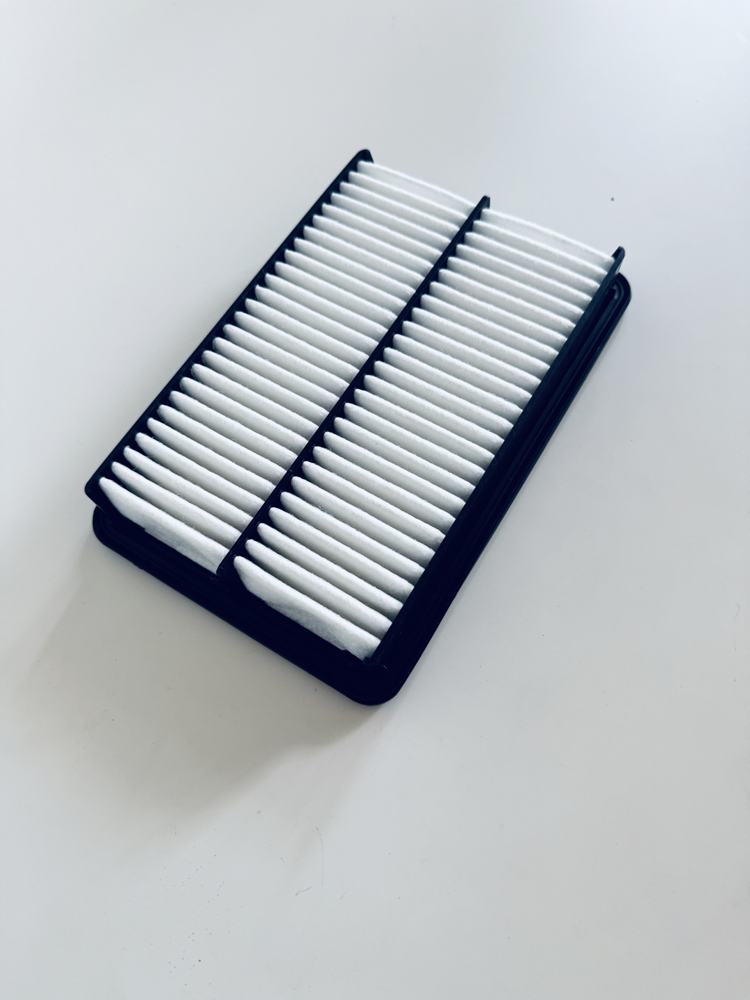

GV-EF-001 · Included component
Engine Air Filter
Part of one maintenance kit.
Included in GV-KIT-001. Not currently sold separately. Identify your component here, check your vehicle and find installation help.
Listed vehicle applications
Mazda CX-5 · Naturally aspirated gasoline
| Engine | Model years |
|---|---|
| 2.0L SKYACTIV-G | 2013–2019 |
| 2.5L SKYACTIV-G | 2014–2025 |
Not for Turbo Models.
Product identification
- Product number
- GV-EF-001
- Included in
- GV-KIT-001
- Quantity in kit
- 1
A closer look

Installation & Product Support
Installation guide
Follow the illustrated steps.
Installation video
Load the video when ready.
Contact support
Ask about your product or order.